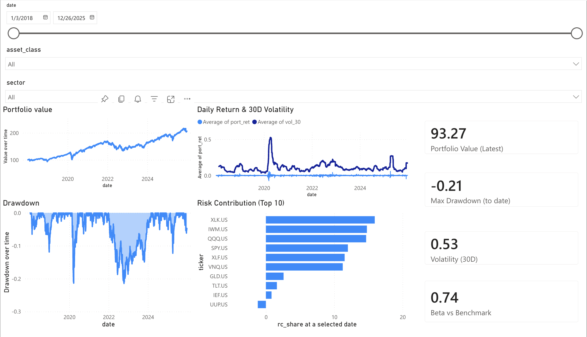
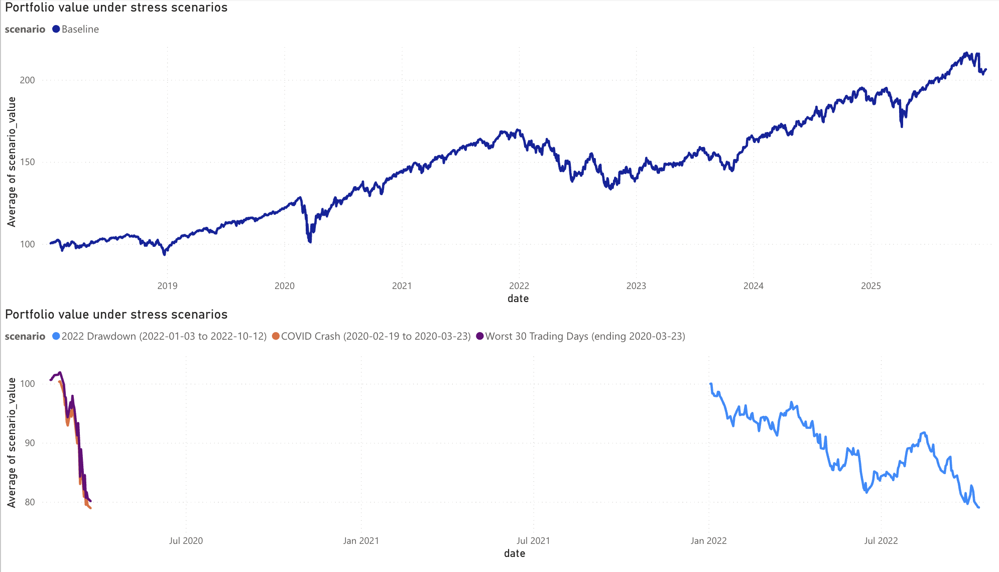

Portfolio Risk Dashboard
Power BI dashboard for portfolio performance, risk metrics, and stress scenarios.
93.27Portfolio Value (Latest)
-0.21Max Drawdown (to date)
0.53Volatility (30D)
0.74Beta vs Benchmark
Problem
Portfolio monitoring gets messy when performance, risk, and attribution live in different places. This project consolidates them into one interactive view with consistent metrics and stress testing.
What’s included
- Filters: date range + asset class + sector.
- Performance: portfolio value over time + daily returns.
- Risk: 30-day volatility, max drawdown, beta vs benchmark.
- Attribution: risk contribution (Top 10 holdings).
- Stress testing: portfolio value under historical shock windows.
Architecture

Dashboard overview: portfolio value, daily return & 30D volatility, drawdown, risk contribution (Top 10),
plus KPI cards and slicers (date, asset_class, sector).
Results

Stress scenarios view: baseline vs historical shock windows (COVID crash, worst 30 trading days, 2022 drawdown).